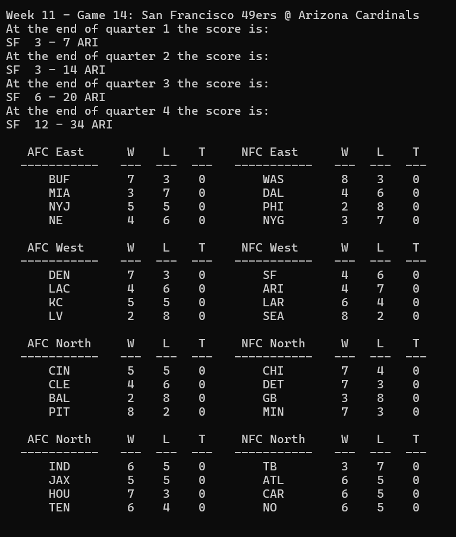
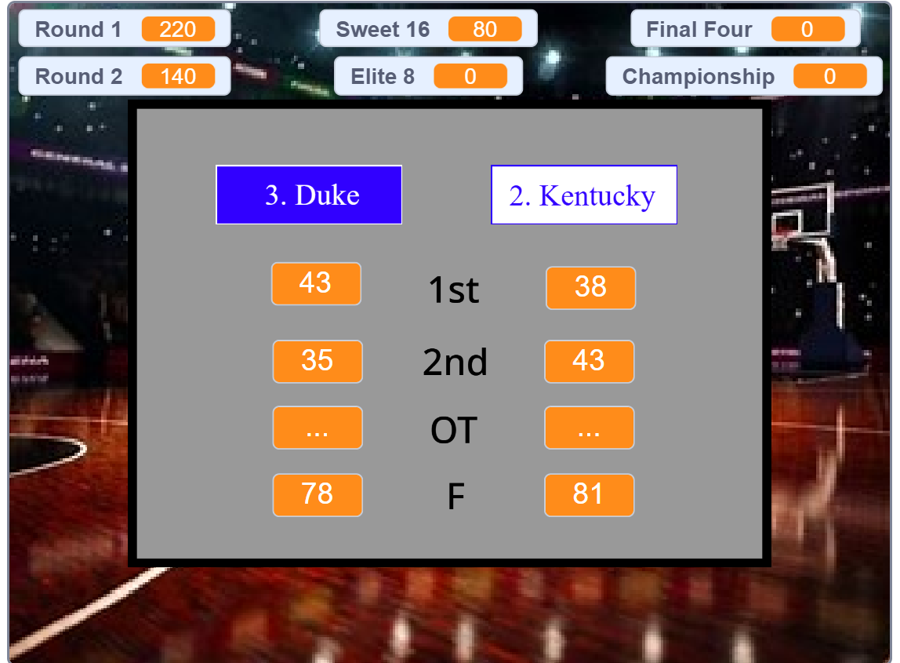

Projects
Crystal Clashers
This is a two-player game with twelve different characters to choose from, created in Scratch. In a dodgeball-style game, players launch crystals at each other until one player's health is completely gone. Each character has a unique ability, receives buffs as their health lowers, and has a special move that charges over time.
Play Crystal Clashers on Scratch

Run Master
A mobile app created in Android Studio designed to track your runs. It features five different tabs: a pace calculator, workout suggestions for different distances, activity logging, a news feed, and a setting to switch between miles and kilometers.

NFL 2022-23 Season Simulator
A Python-based simulation of an NFL season. It goes through each game, updates scores by quarter, and advances the top teams to the playoffs. The program also includes weighted probabilities so that teams with better records have a higher chance of winning.
2020 March Madness Simulator
This is another sports simulation where the first time you go around picking the team you think is going to win, then once that is done it will simulate all the games and show you your score.
